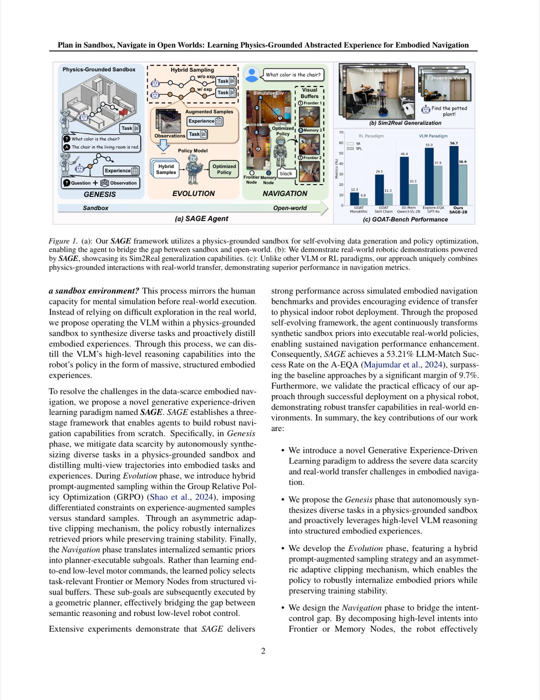

1. 개요 (Overview)
1.1 출판 정보 (Publication Information)
- 논문 제목 (Paper Title): Plan in Sandbox, Navigate in Open Worlds: Learning Physics-Grounded Abstracted Experience for Embodied Navigation
- 저자 (Authors): Zhixuan Shen, Jiawei Du, Ziyu Guo, Han Luo, Lilan Peng, Joey Tianyi Zhou, Haonan Luo, Tianrui Li
- 소속 (Affiliation): A*STAR (Agency for Science, Technology and Research), Singapore; Institute of High Performance Computing (IHPC); University of Electronic Science and Technology of China (UESTC)
- 발표처 (Published): ICML 2026 (International Conference on Machine Learning) — Extended version
- DOI: https://doi.org/10.48550/arXiv.2605.10118
- arXiv: https://arxiv.org/abs/2605.10118v1
- GitHub: 미공개 (논문 상태 기준)
- 프로젝트 페이지: 없음
1.2 연구 목표 (Research Objective)
SAGE(Sandbox-Abstracted Grounded Experience)는 Vision-Language Model(VLM) 기반 로봇이 실세계 개방 환경(Open World)에서 언어 질의에 기반한 구현화 내비게이션(Embodied Navigation)을 수행할 수 있도록, 물리 기반 샌드박스 환경에서 학습한 경험을 실세계로 전이(sim-to-real transfer)하는 프레임워크이다.
핵심 문제 의식:
[기존 접근법의 이중 딜레마]
경로 A: 포토리얼리스틱 시뮬레이터 사용
→ 실세계 외관 갭(Appearance Gap): 색상, 조명, 질감 불일치
→ 과도한 시뮬레이션 구축 비용
→ 정렬된 비전-로봇 제어 데이터 부족
경로 B: 실세계 데이터 직접 수집
→ 비용: 로봇 시간 × 데이터 레이블링 비용
→ 안전 문제: 미지 환경 탐색 실패
→ 확장성 한계: 씬 다양성 제한
SAGE: 제3경로
→ 물리 기반 의미론적 추상화 환경(Semantic Abstract Env)에서 훈련
→ 포토리얼리즘 없이도 물리 법칙(중력, 충돌, 가시성) 보존
→ 소규모 VLM(2B, 4B)으로 GPT-4o 기반 방법 성능 초과
인간의 인지 유추: 체스 그랜드마스터가 실제 말을 움직이기 전에 머릿속에서 추상적인 전략을 시뮬레이션하는 것처럼, SAGE는 로봇이 단순화된 물리 추상 환경에서 탐색 전략을 사전 연습(rehearse)하고 실세계에 전이한다.
2. 문제 정의 (Problem Definition)
2.1 도전과제 (Challenges)
A. 구현화 내비게이션에서 VLM의 근본적 한계
Vision-Language Model은 자연어 이해와 시각적 추론에서 탁월하지만, 구현화 네비게이션(Embodied Navigation) 적용 시 다음 문제가 발생한다:
[VLM 내비게이션 적용의 3대 구조적 문제]
1. 데이터 정렬 부재 (Data Alignment Gap)
VLM 사전학습 데이터:
- 인터넷 이미지/텍스트 쌍 (정적, 비로봇)
- 2D 이미지 캡셔닝, 시각적 QA
내비게이션 요구 데이터:
- 시계열 연속 관찰 (Sequential observations)
- 3D 공간 인지 (Depth, 장애물 거리)
- 행동-결과 매핑 (Action-outcome pairing)
→ 사전학습 도메인과 구현화 도메인 불일치
2. 연속 저수준 제어 미학습 (No Continuous Low-Level Control)
VLM 출력: 텍스트, 이미지 선택 (이산 결정)
로봇 요구: 연속 속도/방향 제어 명령
→ 고수준 언어 결정과 저수준 모터 제어 사이의 브리지 부재
3. 강화학습의 샘플 비효율성 (RL Sample Inefficiency)
실세계 RL: 실패 에피소드 → 물리적 손상, 안전 위험
시뮬레이션 RL: 포토리얼리즘 갭 → 전이 실패
→ 구조화된 사전 지식 없이는 샘플 효율적 학습 불가
B. 현재 벤치마크에서의 성능 격차
실세계 구현화 내비게이션 벤치마크에서의 현황:
[A-EQA 벤치마크 성능 격차 분석]
A-EQA: 557 쿼리, 63개 실세계 씬
(활성화 구현화 질의응답 — Active Embodied Question Answering)
방법 SR†(%) SPL†(%) 한계
──────────────────────────────────────────────────────────
SenseAct-NN (Skill Chain) 24.7 13.3 스킬 체인 복합 오차
SenseAct-NN (Monolithic) 20.6 10.1 단일 모델 제약
Explore-EQA (GPT-4o) 46.9 23.4 API 비용, 추론 지연
3D-Mem (GPT-4o) 52.6 42.0 대규모 모델 의존성
3D-Mem (Qwen3-2B) 44.3 19.4 소형 모델 성능 한계
──────────────────────────────────────────────────────────
주요 격차: 소형 오픈소스 VLM으로 GPT-4o 성능 달성 불가능
핵심 관찰: GPT-4o 기반 3D-Mem(52.6%)이 기존 최고 성능이나, 이를 달성하려면 대규모 유료 API에 의존해야 한다. 소형 모델(Qwen3-2B)은 44.3%에 그쳐 격차가 8%p에 달한다.
C. 시뮬레이터 사용의 실제적 장벽
[포토리얼리스틱 시뮬레이터 vs. 추상 시뮬레이터 비교]
포토리얼(Habitat-SIM) 추상(SAGE-Sandbox)
────────────────────────────────────────────────────────────
구축 비용 수천 시간 3D 스캔 자동 생성 가능
외관 갭 소(~0) 대
물리 법칙 보존 부분(충돌 기반) 완전(Maxwell, 중력)
의미론 레이블 수동 레이블 필요 자동 합성
씬 다양성 제한 (수백~수천) 무한 생성 가능
전이 전략 도메인 랜덤화 의미론적 추상화
────────────────────────────────────────────────────────────
2.2 핵심 해결책
SAGE의 3단계 해결 전략:
[SAGE 핵심 아이디어 요약]
"포토리얼리즘 갭을 피하기 위해 로봇은 추상 샌드박스에서 훈련하고,
의미론적 물리 법칙을 공유 불변량으로 실세계에 전이한다"
해결책 1: Genesis 단계
→ HM3D/InteriorGS 데이터로 물리 기반 의미론적 추상 환경 자동 합성
→ VLM이 자연어 지시/답변 자동 레이블링
→ IF-THEN 규칙을 벡터 DB에 저장
해결책 2: Evolution 단계
→ 비대칭 적응 클리핑(AAC)으로 안정적 RL 훈련
→ 동적 경험 주입으로 샘플 효율성 향상
→ 그룹 이득 추정으로 공정한 학습
해결책 3: Navigation 단계
→ 동적 3D 씬 그래프 + 점유 지도로 상태 유지
→ 벡터 DB에서 관련 IF-THEN 규칙 검색
→ 실세계 ROS 스택과 통합
3. 핵심 방법론 (Core Methods)
3.1 인터랙티브 샌드박스 MDP 정식화
SAGE의 공식적 프레임워크는 인터랙티브 샌드박스 MDP(Interactive Sandbox MDP)이다:
[인터랙티브 샌드박스 MDP 정의]
E_S = (S, A, P)
S: 연속 상태 공간
- 3D 기하 정보: (x, y, z, θ) 포즈
- 의미론적 객체 레이블: {obj_1, obj_2, ..., obj_k}
- 가시성 그래프: V(s) ⊆ S × S
A: 이산 행동 공간
- 관찰 선택: 트리뷰(0°, +120°, -120°) 중 하나
- 웨이포인트 선택: δ_max = 1.0m 범위 내 이동 목표
P(s'|s,a): 상태 전이 확률
- 물리 엔진 기반 충돌/가시성 계산
- 의미론적 레이블 일관성 유지
내비게이션 RL 목적함수:
[목적함수 계층 구조]
원본 목적함수:
J_N(θ) = E[Σ_t γ^t r_N(s_t, a_t, n)]
여기서: n = 자연어 질의, r_N = 실세계 내비게이션 보상
문제: 실세계에서 직접 최적화 시 샘플 비효율적
근사 목적함수 (SAGE 사용):
J_φ(θ) = E[Σ_t γ^t r_φ(s_t, a_t, o)]
여기서: o = 합성 이미지 관찰, r_φ = 프록시 보상
이점: 샌드박스에서 효율적 최적화 후 실세계 전이
3.2 Phase 1: Genesis (태스크 및 경험 합성)
Genesis는 내비게이션 훈련 데이터를 자동으로 합성하는 파이프라인이다:
[Genesis 데이터 합성 파이프라인]
입력: HM3D 데이터셋 (3D 씬 메쉬) + InteriorGS (Gaussian Splatting 씬)
Step 1: 씬 처리
- 렌더링 해상도: 256×256 픽셀
- 시야각(FOV): 120°
- 센서 높이: 1.5m (표준 모바일 로봇 높이)
Step 2: 최적 경로 계산
- A* 알고리즘으로 측지 궤적(geodesic trajectory) 계산
- 씬 내 N개 키포인트 자동 선택
Step 3: 트리뷰 관찰 생성
각 키포인트 t에서:
┌─────────────────────────────────────────────────────┐
│ 관찰_0° 관찰_+120° 관찰_-120° │
│ [전방 뷰] [좌측 뷰] [우측 뷰] │
│ ─────────────────────────────────────────────────── │
│ → 트리뷰 관찰 삼중쌍 O_t = {I_0, I_+120, I_-120} │
└─────────────────────────────────────────────────────┘
Step 4: VLM 기반 자동 레이블링
- 입력: O_t (트리뷰 이미지) + 씬 메타데이터
- 출력: (질의 q_t, 답변 a_t, 이동 방향 d_t)
- 형식: "이 씬에서 {객체}를 찾으려면 어디로 가야 하나?"
Step 5: IF-THEN 규칙 추출 및 저장
- 규칙 형식: "IF {시각 패턴 V_t} THEN {이동 방향 d_t} TO FIND {객체 o_t}"
- 임베딩: 언어 모델로 규칙을 벡터화
- 저장소: Faiss 기반 벡터 DB (빠른 유사도 검색)
예시 IF-THEN 규칙:
규칙 #1:
IF [왼쪽에 소파, 전방에 문]
THEN [좌회전 45°]
TO FIND [침실]
규칙 #2:
IF [전방에 냉장고]
THEN [직진 1.0m]
TO FIND [주방 싱크대]
규칙 #3:
IF [우측에 계단, 전방에 복도]
THEN [우측 방향으로 진입]
TO FIND [2층 침실]
3.3 Phase 2: Evolution (RL 기반 정책 최적화)
Evolution은 비대칭 적응 클리핑(Asymmetric Adaptive Clipping, AAC)을 핵심으로 하는 RL 훈련 단계이다.
3.3.1 복합 보상 함수 설계
[보상 함수 전체 구조]
r_φ(s_t, a_t) = w_f * I_f + w_acc * (I_m * (1 + sim(a_t, a_t*)) - P_err)
구성 요소별 분석:
┌──────────────────────────────────────────────────────────┐
│ 항목 | 정의 | 역할 │
│─────────────────────────────────────────────────────────│
│ w_f = 0.1 | 형식 준수 가중치 | 출력 형식 강제 │
│ I_f | 템플릿 준수 지시자 | {0,1} 이진값 │
│ w_acc = 1.0| 정확도 가중치 | 주 보상 신호 │
│ I_m | 올바른 이미지 선택 | {0,1} 이진값 │
│ sim(·,·) | Rouge-L F1 유사도 | 텍스트 답변 품질 측정 │
│ P_err = 0.5| 오류 페널티 | 잘못된 예측 억제 │
└──────────────────────────────────────────────────────────┘
최대 보상: r_max = 0.1 + 1.0 * (1 * (1 + 1.0) - 0) = 2.1
최소 보상: r_min = 0 + 1.0 * (0 * (1 + 0 ) - 0.5) = -0.5
3.3.2 동적 경험 주입 스케줄링
훈련 초기에는 높은 확률로 DB 규칙을 주입하고, 훈련이 진행될수록 확률을 낮춘다:
[동적 경험 주입 확률 스케줄]
η_t = max(η_min, η_init * (1 - min(R_val^(t), R_target) / R_target))
파라미터:
η_min = 0.0 (최솟값: 완전 자율 학습 가능)
η_init = 0.8 (초깃값: 80% 확률로 규칙 주입)
R_target= 1.5 (목표 검증 보상)
업데이트 주기: 5 RL 스텝마다
훈련 진행에 따른 η_t 변화:
┌─────────────────────────────────────────────┐
│ 0.8 │▓▓▓▓▓ │
│ 0.6 │ ▓▓▓▓ │
│ 0.4 │ ▓▓▓ │
│ 0.2 │ ▓▓▓ │
│ 0.0 │ ▓▓▓▓▓▓▓▓▓▓▓▓▓▓▓▓▓▓▓▓▓ │
│ └───────────────────────────────────── │
│ 0 50 100 150 훈련 스텝 │
└─────────────────────────────────────────────┘
직관: 처음에는 "선생님(DB 규칙)"의 도움을 많이 받고,
성능이 향상될수록 스스로 탐색 (교사 의존도 감소)
3.3.3 비대칭 적응 클리핑 (AAC)
기존 PPO(Proximal Policy Optimization)의 클리핑은 증강 샘플(augmented samples)과 일반 샘플에 동일한 제약을 적용하여 비효율적이다. AAC는 이를 비대칭적으로 처리한다:
[AAC vs 표준 PPO 클리핑 비교]
표준 PPO 클리핑:
ε_up = ε_std = 0.2 (모든 샘플에 동일 적용)
L^CLIP = min(ρ*A, clip(ρ, 1-0.2, 1+0.2)*A)
문제: 증강 샘플의 높은 보상이 충분히 활용되지 않음
AAC 클리핑:
ε_up(m_i) = ε_exp = 1.0 (증강 샘플: 더 넓은 업데이트 허용)
ε_std = 0.2 (일반 샘플: 표준 PPO)
L^CLIP = min(ρ*A, clip(ρ, 1-ε_std, 1+ε_up(m_i))*A)
전체 목적함수 (KL 정규화 포함):
J_φ(θ) = E[L^CLIP(θ) - β * D_KL(π_θ || π_ref)]
β = 0.01 (KL 페널티 가중치)
클리핑 범위 시각화:
증강 샘플: [0.8, 2.0] ← 더 공격적 업데이트 허용
일반 샘플: [0.8, 1.2] ← 보수적 업데이트 유지
AAC의 핵심 통찰: DB 규칙에서 유래한 증강 샘플은 더 신뢰할 수 있는 감독 신호를 포함하므로, 정책 업데이트 시 더 넓은 보폭(larger step)을 허용하는 것이 합리적이다.
3.3.4 동질적 그룹 이득 추정
증강 샘플과 일반 샘플이 혼재할 때, 그룹 내 보상 편차를 사용하여 공정한 어드밴티지를 계산한다:
[동질적 그룹 이득 추정]
일반 GRPO (Group Relative Policy Optimization):
A_{i,j} = (r_{i,j} - μ(R_i)) / (σ(R_i) + ε)
R_i = {r_{i,1}, ..., r_{i,G}} (G=5 롤아웃)
문제: 증강+일반 샘플 혼재 시 μ(R_i)가 증강 샘플에 편향
동질적 그룹 (Homogeneous Group):
증강 그룹: R_i^aug = {r_{i,j} | m_{i,j} = 증강}
일반 그룹: R_i^std = {r_{i,j} | m_{i,j} = 일반}
각 그룹 내에서만 이득 계산:
A_{i,j}^aug = (r_{i,j} - μ(R_i^aug)) / (σ(R_i^aug) + ε)
A_{i,j}^std = (r_{i,j} - μ(R_i^std)) / (σ(R_i^std) + ε)
효과: 증강 샘플의 높은 절대 보상이 일반 샘플의 베이스라인을
인위적으로 높이는 것을 방지 → 공정한 비교
3.4 Phase 3: Navigation (실세계 실행)
실세계 내비게이션 단계에서는 훈련된 정책을 실제 로봇에 배포한다:
[Navigation Phase 실행 파이프라인]
로봇 상태 표현:
R_t = {I_query, M_t, F_t}
I_query: 현재 자연어 질의 (예: "부엌 싱크대 어디?")
M_t: 메모리 버퍼 — 과거 관찰 시계열 {(I_0, I_+120, I_-120)^τ}_{τ<t}
F_t: 프론티어 버퍼 — 미탐색 경계 영역 목록
Step 1: 규칙 검색 (Retrieval-Augmented Navigation)
C_ret = TopK(embed(R_t), VectorDB, K=3)
→ 현재 관찰과 가장 유사한 IF-THEN 규칙 K개 검색
Step 2: 행동 선택
a_t* = argmax π_θ(a | R_t, C_ret)
행동 공간:
1. 이미지 선택: {I_0, I_+120, I_-120} 중 하나
2. 웨이포인트 선택: δ_max = 1.0m 범위 내 목표점
Step 3: 이동 실행
- ROS 네비게이션 스택 통합
- 목표 근접(0.5m 이내) 시 탐색 종료
- 최대 스텝 수: T_max = 50
Step 4: 동적 씬 그래프 업데이트
- 매 스텝마다 3D 씬 그래프 갱신
- 새 객체 발견 시 노드 추가
- 점유 지도(Occupancy Map) 업데이트
3D 씬 그래프 구조:
[동적 3D 씬 그래프 구조]
노드 타입:
├── 위치 노드 (Position Node): (x, y, z, θ) 로봇 포즈
├── 객체 노드 (Object Node): {이름, 3D 바운딩박스, 발견 시각}
└── 영역 노드 (Region Node): {방 이름, 경계 다각형}
엣지 타입:
├── 위치→객체: "visited_at_t"
├── 객체→영역: "belongs_to"
└── 객체→객체: "near_to (거리 < threshold)"
갱신 전략:
- 신규 객체: 즉시 추가
- 객체 이동: 이전 위치 유지 + 새 위치 추가 (이력 보존)
- 탐색 종료 조건: 질의 객체 발견 OR T_max 도달

4. 시스템 아키텍처 (System Architecture)
[SAGE 전체 파이프라인]
┌─────────────────────────────────────────────────────────────────┐
│ SAGE 프레임워크 │
│ │
│ ┌──────────────────────────────────────────────────────────┐ │
│ │ Phase 1: Genesis (오프라인) │ │
│ │ │ │
│ │ HM3D/InteriorGS → A* 경로 → 트리뷰 렌더링 → VLM 레이블 │ │
│ │ ↓ │ │
│ │ IF-THEN 규칙 → 벡터 임베딩 → VectorDB │ │
│ └──────────────────────────────────────────────────────────┘ │
│ ↓ │
│ ┌──────────────────────────────────────────────────────────┐ │
│ │ Phase 2: Evolution (온라인 RL) │ │
│ │ │ │
│ │ π_θ(현재 정책) ─────────────────────────────────┐ │ │
│ │ ↓ │ │
│ │ 샌드박스 환경 → 롤아웃 (G=5) │ │
│ │ ↓ │ │
│ │ η_t 스케줄러 → {증강 샘플 | 일반 샘플} 분류 │ │
│ │ ↓ │ │
│ │ 동질적 그룹 이득 계산 → AAC 손실 + KL 페널티 │ │
│ │ ↓ │ │
│ │ AdamW 업데이트 → π_θ+1 │ │
│ └──────────────────────────────────────────────────────────┘ │
│ ↓ │
│ ┌──────────────────────────────────────────────────────────┐ │
│ │ Phase 3: Navigation (실세계) │ │
│ │ │ │
│ │ 로봇 센서 (RGB-D, IMU) → 3D 씬 그래프 + 점유 지도 │ │
│ │ ↓ │ │
│ │ 트리뷰 관찰 O_t → 벡터 DB 검색 → 규칙 C_ret │ │
│ │ ↓ │ │
│ │ π_θ(R_t, C_ret) → 행동 a_t* → ROS 내비게이션 │ │
│ │ ↓ │ │
│ │ 도착 확인 (거리 < 0.5m) → 최종 답변 생성 │ │
│ └──────────────────────────────────────────────────────────┘ │
└─────────────────────────────────────────────────────────────────┘

데이터 흐름:
[3D 씬 스캔] → [VLM 자동 레이블] → [RL 훈련] → [실세계 배포]
↑ ↓
[씬 다양성 확장] ←────── [성능 피드백] ←──────────────┘
핵심 설계 원칙:
[SAGE 아키텍처 설계 원칙]
1. 모듈성 (Modularity):
Genesis / Evolution / Navigation 단계 완전 분리
→ 각 단계 독립적 업그레이드 가능
2. 추상화 계층 (Abstraction Hierarchy):
물리 세계 → 의미론적 추상 → 정책 학습
→ 포토리얼리즘 없이 물리 법칙 보존
3. 검색 증강 (Retrieval Augmentation):
벡터 DB 기반 IF-THEN 규칙 온라인 검색
→ 정책 내에 외부 지식 통합
4. 위험 인식 탐색 (Risk-Aware Exploration):
η_t 스케줄러로 탐색/활용 균형 자동 조절
→ 성능 향상 시 자율 탐색 비중 증가
5. 실험 결과 및 성능 (Experimental Results)
5.1 데이터셋 (Datasets)
훈련 데이터:
- HM3D (Habitat-Matterport 3D): 대규모 실내 3D 씬 데이터셋
- 씬 수: 수천 개의 실내 환경
- 특성: 높은 기하 다양성 (거실, 침실, 주방, 사무실 등)
- InteriorGS: Gaussian Splatting 기반 실내 씬 데이터셋
- 특성: 세밀한 의미론적 세그멘테이션 정보 포함
평가 데이터:
[평가 벤치마크 상세]
1. A-EQA (Active Embodied Question Answering):
- 총 쿼리: 557개
- 씬: 63개 실세계 환경
- 평가 서브셋: 184개 (검증 서브셋)
- 유형: 자연어 질의 → 로봇 탐색 → 답변 생성
- 예시 질의: "부엌 조리대 위에 무엇이 있나요?"
2. GOAT-Bench (Go to Any Target):
- 서브태스크: 278개
- 씬: 36개 실세계 환경
- 에피소드당 서브태스크: 5-10개 순차 수행
- 유형: 객체 목표 내비게이션 (순차 멀티-목표)
5.2 평가 지표 (Evaluation Metrics)
[평가 지표 정의]
SR† (Success Rate with LLM Scoring):
- 로봇이 목표 도달 후 생성한 답변을 Qwen3-235B-A22B가 평가
- 채점: 0(완전 오답) ~ 1(완전 정답) 연속값
- SR† = (LLM 점수 > 0.5 에피소드 수) / 전체 에피소드 수
SPL† (Success weighted by Path Length with LLM Scoring):
- 경로 효율성 반영 지표
- SPL† = SR† × (최단 경로 / 실제 경로) (성공 에피소드에서 평균)
- 높을수록: 더 짧고 효율적인 경로로 목표 도달
SR (일반 Success Rate, GOAT-Bench용):
- 목표 객체 0.5m 이내 도달 + 탐색 종료 선언
SPL (Success weighted by Path Length):
- SR × (최단 거리 / 실제 이동 거리) 조화 평균
5.3 정량적 결과 (Quantitative Results)
메인 결과 (Table 1):
[A-EQA 및 GOAT-Bench 성능 비교]
방법 | A-EQA | GOAT-Bench |
| SR†(%) SPL†(%)| SR(%) SPL(%) |
──────────────────────────────────────────────────────────────
SenseAct-NN (Skill Chain) | 24.7 13.3 | 29.5 11.3 |
SenseAct-NN (Monolithic) | 20.6 10.1 | 12.3 6.8 |
Explore-EQA (GPT-4o) | 46.9 23.4 | 55.0 37.9 |
3D-Mem (GPT-4o) | 52.6 42.0 | 69.1 48.9 |
3D-Mem (Qwen3-2B) | 44.3 19.4 | 46.4 20.3 |
──────────────────────────────────────────────────────────────
SAGE (Qwen3-2B) | 53.2 37.1 | 56.7 38.9 |
SAGE (Qwen3-4B) | 60.2 47.2 | 64.8 44.9 |
──────────────────────────────────────────────────────────────
주요 발견:
1. SAGE-2B: 3D-Mem-GPT-4o(52.6%)를 A-EQA에서 0.6% 초과
→ 100× 소형 모델로 GPT-4o 대형 모델 성능 달성
2. SAGE-4B: 전 벤치마크에서 최고 성능 달성
→ A-EQA SR†: 60.2% (기존 최고 대비 +7.6%p)
3. SPL 격차: SAGE-2B SPL†(37.1%) vs 3D-Mem-GPT-4o(42.0%)
→ 성공률은 높지만 경로 효율성은 소폭 열세
4. GOAT-Bench: SAGE-2B(56.7%) vs 3D-Mem-GPT-4o(69.1%)
→ 순차 멀티-목표 태스크에서는 대형 모델에 아직 열세
어블레이션 연구 (Table 2):
[컴포넌트별 기여도 분석 (Qwen3-2B 기준)]
방법 | A-EQA SR†(%) | SPL†(%) | 향상폭 |
───────────────────────────────────────────────────────────────
기반 Qwen3-VL-2B | 43.51 | 27.53 | 기준 |
+ C_ret (규칙 검색) | 46.47 | 30.72 | +2.96 |
+ 태스크 합성 (Genesis) | 50.71 | 33.68 | +7.20 |
+ 태스크+경험 (Genesis full) | 51.42 | 34.67 | +7.91 |
+ 태스크+경험+AAC | 51.88 | 36.29 | +8.37 |
+ 전체 SAGE | 53.21 | 37.07 | +9.70 |
───────────────────────────────────────────────────────────────
기여도 순위:
1위: 태스크 합성 (Genesis): +4.24%p 단일 최대 기여
2위: AAC 클리핑: +0.46%p (안정성+성능 동시 개선)
3위: 규칙 검색 (C_ret): +2.96%p (런타임 지식 주입)
SPL 관점: C_ret 추가 시 SPL 개선폭(+3.19%p)이 SR 개선폭(+2.96%p)
보다 커 → 경로 효율성에 규칙 검색이 특히 기여
5.4 리얼월드 실험 (Real-World Experiments)
[실세계 배포 환경]
하드웨어:
- 플랫폼: NVIDIA RTX 4090 탑재 이동형 플랫폼
- 센서: RGB-D 카메라 (구체적 모델 미공개)
- 소프트웨어: ROS 네비게이션 스택
실험 조건:
- 조명: 일정한 인공 조명 환경
- 목표 객체: ±10° 회전 변형으로 재배치
- 씬: 다수의 실내 환경 (구체적 씬 수 미공개)
실험 결과:
- 실세계 배포 성공 확인 (정량적 결과표는 논문에서 미공개)
- 주요 관찰: Genesis 단계에서 합성된 규칙이 실세계에서 유효하게 작동
- 실패 케이스: 심각한 조명 변화 또는 씬 구조 변형 시 성능 저하
한계 및 주의사항 (논문 원문):
"SAGE는 완벽한 예측을 보장하지 않습니다. 구현화 AI 시스템에 통합하기 전
엄격한 검증 프로세스에 특별한 주의를 기울여야 합니다."
6. 핵심 기여점 (Key Contributions)
[SAGE의 4가지 핵심 기여]
1. 물리 기반 의미론적 추상 환경 (Physics-Grounded Semantic Sandbox):
- 포토리얼리즘 없이 물리 법칙(가시성, 가항성, 의미론) 보존
- HM3D + InteriorGS 기반 자동 씬 합성 파이프라인
- VLM 기반 IF-THEN 규칙 자동 추출 및 벡터 DB 구축
- 의의: 고비용 포토리얼리스틱 시뮬레이터 없이 다양한 훈련 데이터 생성 가능
2. 비대칭 적응 클리핑 (AAC):
- 증강/일반 샘플에 차별화된 클리핑 엡실론 적용
- 증강 샘플: ε_up=1.0, 일반 샘플: ε_std=0.2
- 동질적 그룹 이득 추정으로 공정한 어드밴티지 계산
- 의의: RL 훈련 안정성과 증강 샘플 활용도 동시 향상
3. 동적 경험 주입 스케줄링:
- η_t = max(0.0, 0.8×(1-R_val^t/1.5)) 스케줄
- 초기: 높은 주입률로 빠른 수렴 촉진
- 후기: 낮은 주입률로 자율 탐색 역량 개발
- 의의: 지도 학습과 RL의 장점을 자동으로 결합
4. 검색 증강 내비게이션 (Retrieval-Augmented Navigation):
- 런타임에 Faiss 벡터 DB에서 관련 규칙 K개 검색
- 정책 내에 외부 지식 동적 통합
- 의의: 학습 데이터에 없던 새로운 씬에서도 관련 경험 활용 가능
7. 구현 상세 (Implementation Details)
[SAGE 구현 설정 전체 요약]
기반 모델:
- Qwen3-VL-2B (주 실험)
- Qwen3-VL-4B (최고 성능 실험)
- 미세조정 방식: LoRA 또는 전체 파라미터 (논문에서 LoRA 언급)
훈련 설정:
- 학습률: 1e-6
- KL 페널티 가중치 β: 1e-2
- 훈련 스텝: 150
- 롤아웃 그룹 크기 G: 5
- 최대 프레임 수: 4 (각 에피소드당 최대 4개 관찰)
- 옵티마이저: AdamW
- 정밀도: BFloat16 + FlashAttention-2
- 하드웨어: 4× A100 40GB GPU
- 훈련 시간: 29.3시간
보상 파라미터:
- w_f = 0.1 (형식 준수 가중치)
- w_acc = 1.0 (정확도 가중치)
- P_err = 0.5 (오류 페널티)
AAC 파라미터:
- ε_std = 0.2 (일반 샘플 클리핑)
- ε_exp = 1.0 (증강 샘플 클리핑)
동적 주입 파라미터:
- η_min = 0.0, η_init = 0.8
- R_target = 1.5
- 업데이트 주기: 5 스텝
내비게이션 설정:
- 최대 이동 거리/스텝: δ_max = 1.0m
- 종료 조건: 목표 0.5m 이내 도달
- 최대 스텝: T_max = 50
- 검색 K: 3 (IF-THEN 규칙 검색 수)
VLM 평가 (LLM Scoring):
- 평가 모델: Qwen3-235B-A22B
- 역할: 로봇 답변의 정확성 자동 채점
8. 고급 주제 (Advanced Topics)
8.1 포토리얼리즘 갭 vs 의미론적 갭
[두 가지 시뮬레이터 갭의 비교 분석]
포토리얼리즘 갭 (Appearance Gap):
- 시뮬레이터 이미지 ↔ 실세계 이미지 간 시각적 불일치
- 해결책: 도메인 랜덤화, 스타일 전이, GAN 기반 이미지 변환
- SAGE 접근: 근본적 회피 (추상 환경 사용)
의미론적 갭 (Semantic Gap):
- 훈련 씬의 의미론적 구성 ↔ 실세계 씬 간 불일치
- 해결책: 씬 다양성 증가, 인-컨텍스트 학습
- SAGE 접근: 벡터 DB 규칙 검색으로 새 씬 적응
SAGE의 핵심 관찰:
"추상 환경의 포토리얼리즘 갭이 크더라도,
의미론적 물리 법칙(가시성, 도달 가능성, 객체 관계)이
올바르게 모델링되면 정책 전이가 가능하다"
8.2 소형 VLM의 잠재력
[소형 VLM vs 대형 VLM 성능 격차 분석]
3D-Mem 방법에서:
GPT-4o (1,000B+ 파라미터): 52.6% SR†
Qwen3-2B (2B 파라미터): 44.3% SR† → 8.3%p 격차
SAGE 방법에서:
SAGE-2B (2B 파라미터): 53.2% SR† → GPT-4o 초과
SAGE-4B (4B 파라미터): 60.2% SR†
해석: 특정 도메인(실내 내비게이션)에서는
소형 모델도 충분한 특화 훈련으로 대형 모델 초과 가능
8.3 IF-THEN 규칙 검색의 한계
[벡터 DB 기반 규칙 검색의 한계]
1. 분포 외 씬 처리:
- 훈련 씬과 완전히 다른 구조(예: 창고, 병원)에서 검색된 규칙 부적합
- 대응: 씬 유형 인식 후 적절한 서브셋 검색 (미구현)
2. 임베딩 품질 의존성:
- 시각 임베딩의 품질이 규칙 검색 정확도에 직접적 영향
- 미묘한 외관 차이로 잘못된 규칙 검색 가능
3. 규칙 갱신 부재:
- 실세계 경험에서 학습한 새 규칙 DB 추가 불가 (온라인 갱신 없음)
- 향후 연구: 지속 학습(Continual Learning) 통합 필요
8.4 확장성 및 향후 방향
[SAGE 확장 방향]
1. 멀티-로봇 확장:
- 여러 로봇이 다른 영역을 탐색하며 IF-THEN 규칙 공유
- 분산 벡터 DB로 실시간 지식 교환
2. 장기 기억 통합:
- 반복 방문 씬에서의 경험 누적
- 시간적 변화(조명, 객체 재배치) 적응
3. 외부 씬 맵 통합:
- OpenStreetMap, BIM 데이터와 통합
- 사전 지식으로 IF-THEN 규칙 풍부화
4. 다중 모달 질의 지원:
- 이미지 + 텍스트 복합 질의 처리
- "저 창문 옆에 있는 물건은 무엇인가?" 유형 지원
9. 비교 분석 (Comparative Analysis)
9.1 기존 리뷰 논문과의 비교
다음의 VLN 트랙 기존 리뷰 논문들과 SAGE를 체계적으로 비교한다:
| 특성 | HiCoNav (ICRA2026) | NavDP (ICRA2026) | LiveVLN (arxiv2026) | WorldMAP (arxiv2026) | SAGE (ICML2026) |
|---|---|---|---|---|---|
| 핵심 접근 | 계층적 비동기 VLN | 확산 정책 + 특권 정보 | 비동기 추론 최적화 | 세계 모델 기반 예측 | 샌드박스 RL + 규칙 검색 |
| 훈련 패러다임 | 지도 학습 + RL | IL + Diffusion Policy | Training-Free | 지도 학습 | RL (GRPO+AAC) |
| 시뮬레이터 | Habitat (포토리얼) | Habitat (포토리얼) | 없음 | Habitat (포토리얼) | 추상 샌드박스 |
| 실세계 실험 | ✅ Unitree 사족보행 | ✅ 이동 로봇 | 제한적 | ❌ | ✅ RTX 4090 플랫폼 |
| 코드 공개 | ✅ GitHub | ✅ GitHub | ✅ GitHub | ❌ | ❌ (미공개) |
| 주요 벤치마크 | HM3D ObjectNav | R2R, GOAT | R2R, REVERIE | R2R | A-EQA, GOAT |
| 소형 모델 지원 | 한정적 | ✅ (7B까지) | ✅ (API 불필요) | ❌ GPT 의존 | ✅ (2B, 4B) |
| 발표 학회 | ICRA 2026 | ICRA 2026 | arXiv | arXiv | ICML 2026 |
9.2 장단점 분석
SAGE의 장점:
1. 포토리얼리즘 갭 근본 회피:
- 기존 방법(HiCoNav, NavDP)은 Habitat 포토리얼리스틱 시뮬레이터 의존
- SAGE는 추상 환경으로 외관 갭 자체를 제거
- 결과: 더 강한 의미론적 일반화
2. 소형 모델로 대형 모델 성능 달성:
- 3D-Mem + GPT-4o(~1000B)를 SAGE + Qwen3-2B(2B)가 초과
- 100× 파라미터 효율성
- 엣지 컴퓨팅 배포 가능성 향상
3. 검색 증강으로 온라인 지식 확장:
- 정책 파라미터에 고정된 HiCoNav/NavDP와 달리
- 런타임에 새로운 IF-THEN 규칙 주입 가능
- 씬 특화 적응 능력
4. 탑티어 ML 학회 발표 (ICML 2026):
- 로보틱스 특화 학회(ICRA) 외 ML 커뮤니티에서의 인정
- VLN 연구의 ML 주류 편입 신호
SAGE의 단점:
1. GOAT-Bench에서 대형 모델 열세:
- 순차 멀티-목표: 3D-Mem-GPT-4o(69.1%) >> SAGE-4B(64.8%)
- 장기 계획 능력에서 소형 모델 한계 존재
2. 코드 미공개:
- HiCoNav, NavDP, LiveVLN 대비 재현성 취약
- 연구 커뮤니티 활용도 제한
3. 훈련 비용:
- 4×A100 GPU, 29.3시간 (학술 실험실 환경에서 부담)
- NavDP 대비 데이터 합성 파이프라인 추가 구축 필요
4. 실세계 실험 정량화 부재:
- HiCoNav(Unitree 실험 정량적 수치 제공) 대비 미흡
- RTX 4090 플랫폼 실험의 구체적 성공률/실패 분석 없음
9.3 실적용 가능성 평가
[실세계 로봇 배포 관점 평가]
시나리오별 SAGE 적합성:
┌──────────────────────────────────────────────────────────────┐
│ 시나리오 │ 적합성 │ 이유 │
│────────────────────────│────────│─────────────────────────────│
│ 가정용 서비스 로봇 │ ★★★★☆ │ 소형 모델, 실내 씬 특화 │
│ 상업 공간 안내 로봇 │ ★★★☆☆ │ 씬 다양성 부족 우려 │
│ 재난 구조 로봇 │ ★★☆☆☆ │ 미지 환경 규칙 검색 한계 │
│ 물류 창고 로봇 │ ★★★☆☆ │ 창고 특화 씬 데이터 필요 │
│ 의료 지원 로봇 │ ★★★☆☆ │ 안전 보장 미비, 규칙 불완전 │
└──────────────────────────────────────────────────────────────┘
실적용 시 주요 고려사항:
1. 씬별 IF-THEN 규칙 DB 구축 필요 (초기 씬 스캔 비용)
2. ROS 통합: 표준 내비게이션 스택과 호환 (장점)
3. 연산: RTX 4090 수준 GPU 필요 (엣지 배포 제한)
4. 실시간성: 스텝당 추론 시간 미공개 (성능 예측 어려움)
9.4 연구 방향성 평가
[연구 트렌드 관점]
기존 VLN 연구 방향:
A. 포토리얼리스틱 시뮬레이션 → 도메인 랜덤화 → 실세계
B. 대형 VLM/LLM API 기반 제로샷 방법
C. 경량화 + 배포 가능성 최적화
SAGE의 방향:
D. 추상 샌드박스 + RL → 실세계 전이
→ 방향 A의 포토리얼리즘 의존성 탈피
→ 방향 B의 대형 API 의존성 탈피
→ 방향 C와 일부 공유 (소형 모델 사용)
평가:
✅ 새로운 연구 방향 제시: 추상화 기반 전이 학습
✅ ML 커뮤니티와의 시너지: ICML 발표로 VLM+RL 연구 연결
⚠️ 실세계 검증 부족: 정량적 리얼월드 결과 미공개로 실용성 불확실
⚠️ 코드 미공개: 연구 재현 및 확장 어려움
10. 참고 문헌 (References)
- Qwen3-VL: Qwen Team (2026). Qwen3-VL Technical Report. Alibaba Group.
- HM3D: Ramakrishnan et al. (2021). Habitat-Matterport 3D Dataset. NeurIPS 2021.
- A-EQA: (논문 내 참조 — Active Embodied Question Answering 벤치마크)
- GOAT-Bench: Chang et al. (2024). GOAT-Bench: A Benchmark for Multi-modal Lifelong Navigation. CVPR 2024.
- SenseAct-NN: Majumdar et al. (2023). Where Are We in the Search for an Artificial Visual Cortex for Embodied Intelligence?
- Explore-EQA: Ren et al. (2024). Explore-EQA: Exploring Embodied Environments for Embodied Question Answering. ICML 2024.
- 3D-Mem: Yang et al. (2024). 3D-Mem: 3D Scene Memory for Embodied Navigation. (arxiv)
- GRPO: Shao et al. (2024). DeepSeekMath: Pushing the Limits of Mathematical Reasoning in Open Language Models.
- HiCoNav: Xu et al. (2026). A Deployable Embodied VLN System with Hierarchical Cognition. ICRA 2026.
- NavDP: Cai et al. (2026). Learning Sim-to-Real Navigation Diffusion Policy with Privileged Information Guidance. ICRA 2026.
- WorldMAP: (arxiv 2026). WorldMAP: Bootstrapping VLN Trajectory Prediction with Generative World Models.
- LiveVLN: (arxiv 2026). LiveVLN: Breaking the Stop-and-Go Loop in Vision-Language Navigation.
- Faiss: Johnson et al. (2021). Billion-scale Similarity Search with GPUs. IEEE TPAMI.
11. 결론 (Conclusion)
SAGE는 VLN 분야에서 포토리얼리스틱 시뮬레이터와 대형 API 모델이라는 두 가지 의존성을 동시에 탈피한 최초의 체계적 프레임워크다. Genesis-Evolution-Navigation의 3단계 구조는 각각 (1) 비용 효율적 데이터 합성, (2) RL 기반 특화 훈련, (3) 실세계 검색 증강 실행이라는 서로 다른 과제를 독립적으로 해결한다.
혁신성 요약:
- 물리 기반 의미론적 추상 환경: 포토리얼리즘 없이 전이 가능한 내비게이션 정책 학습
- AAC(비대칭 적응 클리핑): 증강 샘플과 일반 샘플의 차별화 처리로 RL 안정성 향상
- 동적 경험 주입: 교사 의존에서 자율 탐색으로의 자연스러운 전이
실용적 의의:
- 2B 파라미터 소형 모델로 GPT-4o 기반 방법 초과 → 엣지 배포 가능성
- ICML 2026 발표로 VLN 연구의 ML 주류 연결
- ROS 통합 실세계 배포 검증
향후 연구 방향:
- 정량적 실세계 실험 결과 공개
- 코드 오픈소스화
- GOAT-Bench 순차 멀티-목표 성능 개선 (현재 GPT-4o 대비 열세)
- 온라인 규칙 DB 갱신으로 지속 학습 통합
SAGE는 VLN이 단순히 "포토리얼리스틱 시뮬레이션과 대형 모델의 게임"이 아님을 보여준다. 올바른 추상화와 훈련 방법론으로 소형 모델도 실세계에서 경쟁력 있는 내비게이션 능력을 달성할 수 있다. 이는 에지 컴퓨팅 기반 실제 로봇 배포에 직접적 시사점을 제공한다.